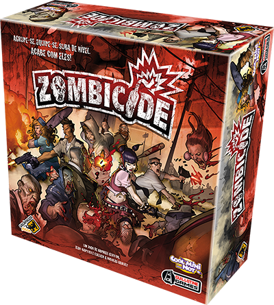
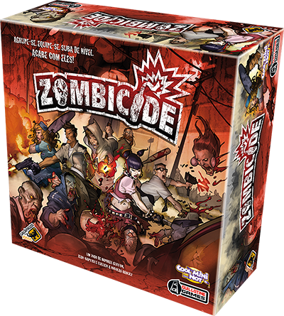

Pernambucano, 28 anos, mora no Rio de Janeiro desde os 5 anos de idade, ou seja: carioca por osmose. Tarólogo por paixão e, também, um aficcionado por tecnologia. Resgatou da infância o grande interesse por tecnologia e resolveu sair do curso de Engenharia para dedicar-se à tecnologia de informação. Cursa, atualmente, o processo de formação full-stack da Resilia e, em 6 meses, obterá o grau de desenvolvedor júnior.

Como qualquer um outro aficionado por tecnologia, um dos principais hobbies sempre vai ser os videogames. Nas horas vagas, dedico um pouco do meu tempo ao League of Legends, um jogo competitivo que consegue me distrair bastante. Além disso, sempre tento ao máximo reunir meus amigos dentro de casa para jogar jogos de tabuleiro e comer comidas não tão saudáveis.

 
